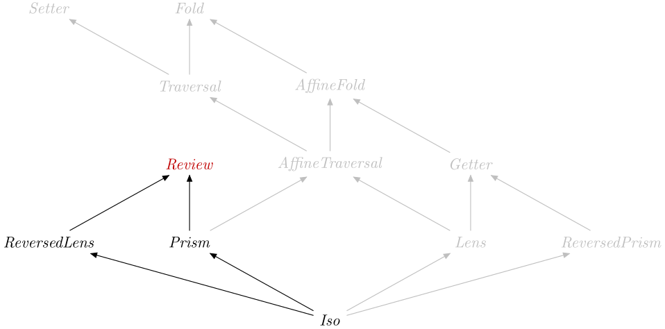

| Safe Haskell | Safe-Inferred |
|---|---|
| Language | Haskell2010 |
Optics.Review
Formation
Introduction
Elimination
review :: Is k A_Review => Optic' k is t b -> b -> t Source #
Retrieve the value targeted by a Review.
>>>review _Left "hi"Left "hi"
Computation
Subtyping
data A_Review :: OpticKind Source #
Tag for a review.
Instances
